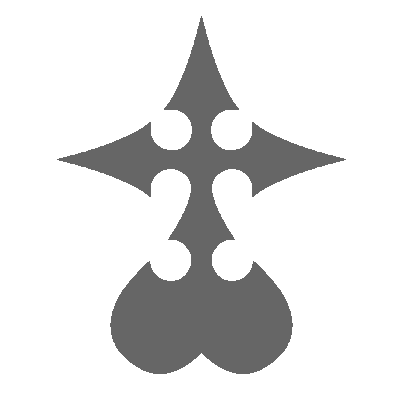
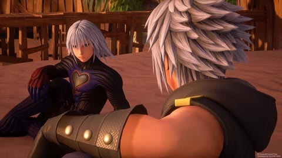
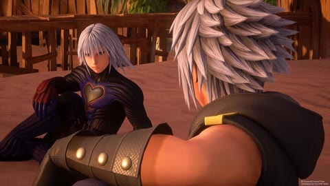
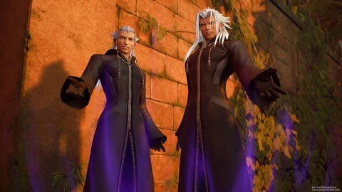
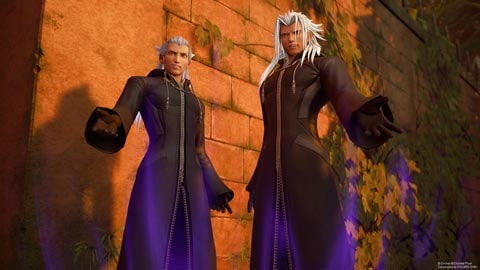

ABOUT

Kingdom Hearts III is the third main installment in the Kingdom Hearts series developed and published by Square Enix.The story takes place after the events of Kingdom Hearts 3D: Dream Drop Distance. It features an older Sora as the main protagonist, who sets forth on a new adventure to search for seven guardians of light in an attempt to stop Xehanort from bringing about a second Keyblade War. Sora is joined by Donald Duck, Goofy, Mickey Mouse, Riku, Kairi, and others.
CHARACTERS
Xehanort
Master Xehanort was a powerful and elderly Keyblade Master, serving as the first master of Ventus, and the creator and master of Vanitas. He is also the primary original incarnation of Ansem and Xemnas, and the future self of Young Xehanort. Master Xehanort served as the central antagonist of the Dark Seeker saga of the Kingdom Hearts series, appearing directly as the main antagonist of Kingdom Hearts Birth by Sleep, and Rank I of the real Organization XIII in Kingdom Hearts 3D: Dream Drop Distance and Kingdom Hearts III.
Young Xehanort
Young Xehanort is Master Xehanort's time-traveling younger self, and Rank XII of the real Organization XIII. At some point in time, he was gifted the power to transcend time by his future Heartless in order to assemble a new Organization XIII in the future, consisting entirely of thirteen vessels infused with a fragment of his heart.
Ansem
Ansem, Seeker of Darkness is Xehanort's Heartless Due to him having intentionally separated his heart from his body and soul before he gave into the darkness, Ansem retained his selfhood, and intelligence after his transformation into a Heartless. Because he could think out his plans and pass for a human, he was able to destroy nearly every world in the Kingdom Hearts universe without revealing his identity, up until he confronted Sora at the Final Keyhole in Hollow Bastion
Xemnas
Xemnas is the Nobody of Xehanort and rank I of Organization XIII, Rank III of the real Organization XIII. As the oldest of the Nobodies, Xemnas wields the power of nothingness, and channels this into his weapons, red blades of energy called Ethereal Blades, which extend from the palms of his hands. Xemnas is the first member and founder of Organization XIII, with all other Nobodies under his control
ART
 

 
